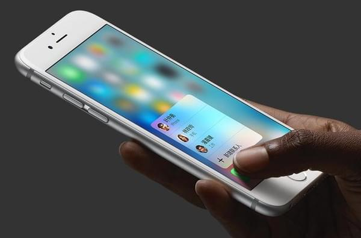

发现
初识Require JS
ReuireJS目标是鼓励代码模块化,可以用它来加速，优化代码RequireJS以一个相对于baseUrl的地址来加载所有代码,顶层script标签含有一个特殊的属性data-main这个属性表示当requireJS加载完成后就马上加载data-main的js
ReuireJS比传统的JS更有执行效率,真正的无堵塞js
这个网站从4.13号开始就用requireJS技术来代替原有的script标签,以后的本网站的信息量会更大,楼楼才考虑这种方式来加载js,想想用ajax和requireJS合并还是挺完美的一个组合
IPHONE 6S/6SP 3DTOUCH简介

3Dtouch原理:
6s与6sp屏幕自带压力感应,用力的按压屏幕屏幕的压力传感器会将数值以参数的形式传送给IOS系统,透过手指压力的面积变化从而产生不同的电学信号，压力感测期间根据电信号进行处理，此时的手机CPU将会接收到压力探测器的讯号，手机CPU将会产生相应的指令。这是顾客感知由压力产生的指令变化（比如屏幕变化）,这是前端可以根据这些数值来进行制作一系列的3dtouch页面...